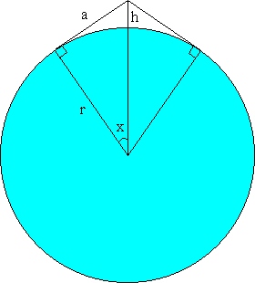

Solution to puzzle 4: Equatorial belt
In the diagram below, the belt meets the Earth at a tangent, and therefore the angle between the belt and a radius is 90°. Consider two lines: one joining the center of the Earth to the high point of the rope; the other joining the center of the Earth to one of the points at which the belt meets the Earth. Let x be the angle subtended, in radians, between the two lines. Let a be the distance from the high point of the rope to a point at which the belt meets the Earth.
The length of the belt not in contact with the Earth is 2a. The corresponding circular arc length is r · 2x.
Let d be the extra length added to the belt: 1 meter in our example.
Then 2a = 2rx + d.
Hence a = rx + d/2, and so a/r = x + d/2r.
We also have, tan x = a/r.
Therefore tan x = x + d/2r.
Given numerical values for d and r, this equation can be solved for x to any required degree of accuracy using the Newton-Raphson Method, enabling us to calculate h. Instead, we will pursue an approximate solution for small values of d = extra belt length.
Assume d/2r is very small, as it is for d = 1, r = 6,400,000.
Then tan x  x, and so x is small.
x, and so x is small.
The Maclaurin series for tan x is: x + x3/3 + ...
Hence x + x3/3  x + d/2r, and so x3
x + d/2r, and so x3  3d/2r.
3d/2r.
We also have h = r(sec x - 1).
At this point, we could substitute values for d and r, and calculate x3, and thereby h. However, we will continue with an approximate solution, to determine the general expression for h in terms of r and small d.
The Maclaurin series for sec x is: 1 + x2/2 + ...
(The cube root of 3d/2r is of the order of 0.01 when d = 1, so this approximation is still acceptable.)
Therefore h  rx2/2.
rx2/2.
And so h  (r/2) · (3d/2r)2/3.
(r/2) · (3d/2r)2/3.
Simplifying, h  k · r1/3 · d2/3, where k = (3/2)2/3/2
k · r1/3 · d2/3, where k = (3/2)2/3/2  0.65518535.
0.65518535.
Since the Earth's radius is a constant, we see that h is proportional to d2/3.
For d = 1, r = 6,400,000, we obtain h  121.6 meters.
121.6 meters.
Remarks
Applying the Newton-Raphson Method to f(x) = tan x - x - d/2r = 0, yields the solution x = 0.0061654989, from which h = 121.64473 m, both correct to 8 significant figures.
The above approximate solution, h  (3/2)2/3/2 · 6,400,0001/3 · d2/3, is accurate to within 0.1% for extra belt lengths of up to about 2.3 km. The table below gives further illustrations, correct to 8 significant figures.
(3/2)2/3/2 · 6,400,0001/3 · d2/3, is accurate to within 0.1% for extra belt lengths of up to about 2.3 km. The table below gives further illustrations, correct to 8 significant figures.
| Extra belt length (m) | Approximate height (m) | Exact height (m) | Percentage difference |
|---|---|---|---|
| 0.001 | 1.2164404 | 1.2164405 | -0.0000056628017 |
| 0.01 | 5.6462162 | 5.6462177 | -0.000026460023 |
| 0.1 | 26.207414 | 26.207446 | -0.00012284293 |
| 1 | 121.64404 | 121.64473 | -0.00057020334 |
| 2 | 193.09788 | 193.09962 | -0.00090513744 |
| 5 | 355.68933 | 355.69526 | -0.0016672651 |
| 10 | 564.62162 | 564.63656 | -0.0026465916 |
| 20 | 896.28095 | 896.31860 | -0.004201135 |
| 50 | 1650.9636 | 1651.0914 | -0.0077382741 |
| 100 | 2620.7414 | 2621.0633 | -0.012283168 |
| 200 | 4160.1676 | 4160.9789 | -0.019496863 |
| 500 | 7663.0943 | 7665.8469 | -0.035907446 |
| 1000 | 12164.404 | 12171.340 | -0.056987112 |
| 2000 | 19309.788 | 19327.265 | -0.090430158 |
| 5000 | 35568.933 | 35628.234 | -0.16644292 |
| 10000 | 56462.162 | 56611.585 | -0.26394511 |
| 20000 | 89628.095 | 90004.599 | -0.41831634 |
| 50000 | 165096.36 | 166373.69 | -0.76774618 |
| 100000 | 262074.14 | 265292.26 | -1.2130464 |
| 200000 | 416016.76 | 424123.55 | -1.9114198 |
| 500000 | 766309.43 | 793794.84 | -3.4625335 |
| 1000000 | 1216440.4 | 1285617.5 | -5.3808434 |
| 2000000 | 1930978.8 | 2104894.1 | -8.2624275 |
| 5000000 | 3556893.3 | 4142952.5 | -14.145932 |
| 6400000 | 4193186.2 | 5005072.4 | -16.221268 |
| 10000000 | 5646216.2 | 7106259.6 | -20.545878 |
Further reading
Source: Pete Barnes